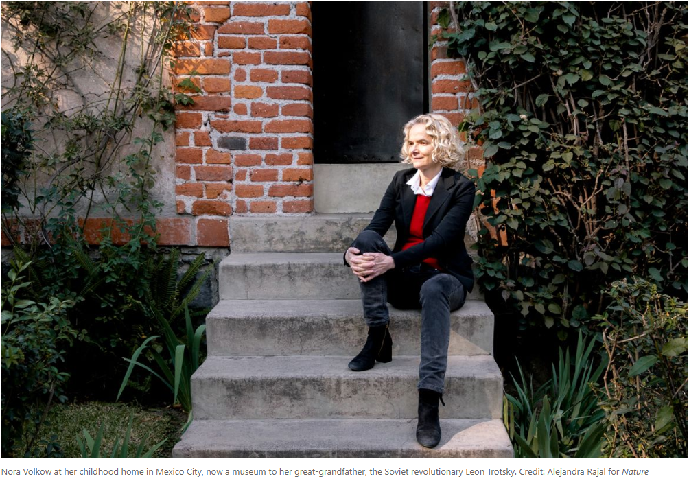
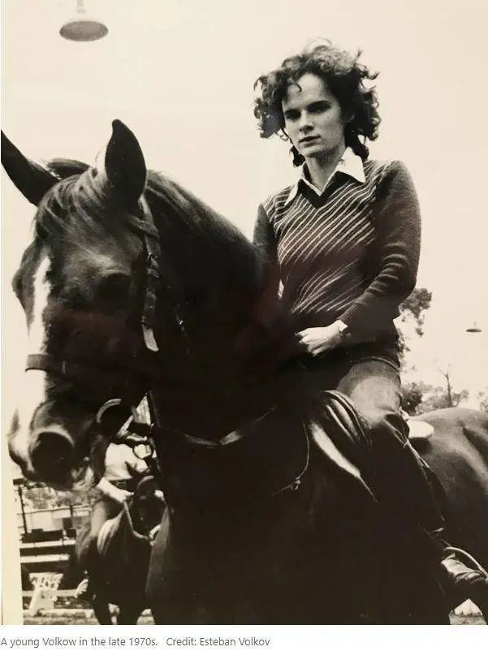
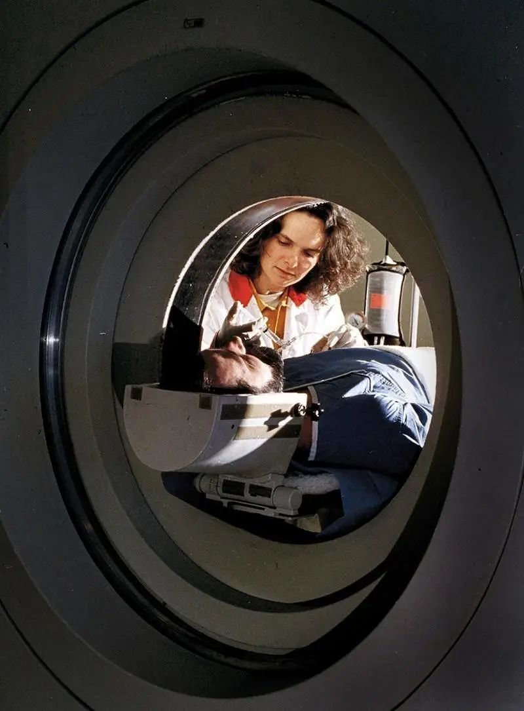

鸦片类药物滥用危机中的神经学家

来源：自然期刊
作者：Emiliano Rodriguez Mega
翻译：桃子，小庄
排版：hurrah
特别感谢：paper，北风儿，朝酒，小安
插图来源网络，侵权删除
25年前的一个寒冷冬夜，一位研究药物滥用的研究员Nora Volkow在回家路上遭遇了车祸。当她躺在医院病床上疼痛难忍时，医生给她开了杜冷丁——一种常见的效果强劲，但极易上瘾的鸦片类止痛药片，效果与吗啡相当。
由于她的研究方向，Volkow深知这种药物的效果和危险性。但当她自己服用药物感受到无与伦比的感官刺激时，她还是吓了一跳。她描述这种飘飘欲仙的感受能与长时间性爱高潮媲美，掩盖了所有其他感觉。几天后，她带着更多度冷丁出院回家了。
她决定即使剧痛也不再服用这种止痛药。当天晚上她就出现了戒断反应：烦躁，焦虑，绝望。她只好又服用了一片。所有的不安感立刻一扫而空。“我意识到药瘾发展得有多块。我吓坏了。”
在过去的20年间，鸦片类药物在美国的泛滥已经造成了超过40万人死亡，其中超40%的死亡是由于不当的医嘱处方导致。2017年起美国开始整治推进鸦片类药物处方的医药公司，包括对普度制药（Purdue Pharma）和强生公司（Johnson & Johnson）的起诉和罚款。在一系列案件中，作为证据被公开的机密文档揭露了咨询公司麦肯锡（McKinsey&Co）为多个鸦片类药物公司提出的一系列建议，包括如何大规模营销鸦片类药物，如何让医生规避各州法规开出更多药物处方，以及如何另更多病人更长时间使用更多这类药物。
在这一系列案件中，美国国立药物滥用研究所（NIDA）的一系列研究项目尤其引人注目。神经学家Nora Volkow现在是这个研究所的领导人，常年活动于医学界和司法界，为药物成瘾病人的权利奔走。
Volkow主导的研究项目揭露了药物成瘾主要是一种生物性的大脑病症，而不是成瘾病人的“道德沦丧”。她的研究所致力于监督药物使用，以及开发更难导致上瘾的药物。
Nora以科学为主要视角的研究方向也引起了多方批评。批评者认为，过分强调生物学和大脑的病症，会弱化社会和经济压力对药物成瘾的影响。从去年开始，Volkow在项目中也开始正视这种影响，在研究中考虑弱势群体比如流浪者、失业者和独居者更容易上瘾和更不易恢复的事实。由于她的研究重要到可以左右美国对于药物使用的国策，其他研究者都在密切关注着她的项目。
Volkow的科学家视角来自于她自己家庭的影响。“她的人生理想就是用科学的力量帮助成千上万的人。”Volkow的哈佛同僚这样评价她，“而且她正在这么做。”

Volkow在墨西哥城长大。她的母亲来自马德里，为逃脱弗朗哥独裁政权来到了墨西哥。她的父亲是化学家，也是苏联政治难民。她的曾祖父是大名鼎鼎的苏联革命家托洛茨基（Leon Trotsky）。
在Volkow年轻时就对人脑颇感兴趣。她就读于墨西哥国立自治大学的医学院。她的父亲对她的志向从来都是毫无保留地鼓励。“每当我问父亲任何关于科学的请求，回答都是‘没问题’。”她回忆。一次她要求把尸体带回家中解剖，他也同意了。她的母亲和姐妹们威胁要搬出住所，她只好妥协，只拿了骨头回家做研究。
以全年第一的成绩从医学院毕业后，Volkow来到美国麻省理工学院学习心理学。但1980年一篇发表在《科学美国人》上的文章打乱了她的计划。
这篇文章描述了一种创新技术，正电子断层造影（PET），使活体神经成像成为可能，人们可以看到大脑的实际活跃模式。Volkow马上被吸引了。
她马上联系进入了纽约大学医学院精神科实验室。这家实验室正在进行神经成像的实验。他们的研究方向是研究和帮助大脑有缺陷的病人。
“很显然她从一开始就是个明星。”Volkow当时的导师说，“她充满能量。”Volkow很快就参与了所有项目，从大脑肿瘤造影到精神分裂病人大脑活动研究。她开始为自己赢得叛逆但天才的科学家的名声。“她认为她永远是对的。”她的导师回忆说，“绝大部分时间，她确实是对的。”

1970年代的Volkow。图片来源：Esteban Volkov
20世纪80年代中期，Volkow完成了在纽约大学的精神病学住院实习期，并搬到了休斯顿的德克萨斯大学健康科学中心，研究其医学影像设备。在这期间，可卡因的热潮使得瘾君子人数激增。这使她改变了研究精神分裂症的原计划。
在一次又一次的PET扫描中，Volkow在这些人的大脑中发现了异常。“你会在血液流动的地方看到有很多洞和缺口。”她如是说。Volkow意识到可卡因会阻塞血管，使血液无法正常循环，与轻微中风类似。在那时，她的发现与普遍认为可卡因是一种“相对安全的物质”这一观点相矛盾，尽管1986年两名著名美国运动员（篮球运动员Len Bias和美式橄榄球运动员Don Rogers）的逝世改变了这种看法。
于1987年，Volkow搬至布鲁克海文国家实验室，并在接下来的16年中持续探究毒品对大脑的影响。她运用放射性同位素标记可卡因，进而追踪其在大脑中触发神经递质多巴胺的速度以及其消散的速度。她认为，这种效应的速度可以解释该药物极强的成瘾性。

图为Volkow于2003年为被检者进行PET扫描。她是将PET扫描技术运用到神经科学中的早期实践者。图片来源：NIDA（NIH）
在布鲁克海文国家实验室期间，Volkow不断质疑神经科学领域中长期存在的设想。当时普遍的共识是，成瘾物质会损害大脑的奖赏中心，诱使人们继续服用这些物质以获得快感。然而，这仍无法解释为什么众多病人告诉她，他们感觉是在被迫使服药，即使他们早已感受不到这种快感。好像他们已经失去了决定是否服药的权力。她意识到，这种更复杂的反应似乎不仅仅涉及处理奖赏的大脑区域。
1990年代出现了一系列重要发现。Volkow注意到，前额叶皮层（调节决策和自我控制的大脑区域）在可卡因成瘾的男性中是不活跃的。这种异常有时可能在成瘾之前出现，使人更容易受到它的影响。她推断大脑决策区域的功能失调是吸毒者感到失去自控的原因。此外，她和她的团队还发现，持续服用可卡因会杀死多巴胺受体，从而使大脑变得麻木。因此，即使增加了服用剂量，人们收获的快感也会不断减少。该结论而后在滥用酒精、海洛因和甲基苯丙胺的人群中也被Volkow和她的同事印证。
通过参考PET扫描影像，Volkow便可识别出上瘾者。“这给我们带来了完全不同的认知，”Volkow最亲密的合作者和朋友之一，于2014年退休的布鲁克海文大学放射化学家Joanna Fowler说，“这让我们从认为上瘾是一种道德弱点或缺乏意志力，转变为认识到上瘾是一种大脑疾病。”
Volkow补充了更多的发现: 例如，在戒酒几个月后，酒精成瘾引起的一些大脑变化可以逆转。多巴胺会影响人们的动力，而这一过程在吸毒成瘾中会失调。
心理学家Alan Leshner是华盛顿特区美国科学促进会的前首席执行官，也是Volkow在NIDA的前辈。他说：“她的想法与惯例背道而驰，我知道人们都认为她很奇怪。”
即使Volkow知道，但她也并不在乎。Leshner说：“她是一位极为勇敢的科学家，她开创了一种全新的研究大脑的方法。” 2003年，Volkow接任了NIDA的首席主管，NIDA现在是一家市值13亿美元的预算机构，其资助的关于成瘾性的科学研究数量是世界第一。
同时，Volkow也是NIDA历史上任职最久的首席主管。在任职期间，她持续着自己的研究，收集了有关药物滥用基本生物学的证据，她的机构也为许多其他研究者提供了支持。
Volkow对食品和药物管理局（FDA）制定的成瘾药物批准标准提出了质疑：直到2018年改变其政策之前，FDA仅在能够证明其戒酒的情况下才批准此类治疗。Volkow声称，将成瘾重新定义为一种病理状态至少在一定程度上促成了诸如2008年《美国精神健康均等与成瘾公平法》之类的立法，该法案要求保险公司将滥用药物的行为置于 与其他疾病并驾齐驱。
Madras说：“我认为，美国和全世界都应感到非常幸运，因为Volkow接受了NIDA总监的职位。”
在墨西哥城一个鹅卵石铺成的街区，刻有锤子和镰刀的墓碑守卫着Volkow曾祖父的骨灰。1940年，在Volkow出生前很久的时候，Trotsky在房子里被一名持冰斧的斯大林主义者杀害。这座房子是Trotsky企图逃生的纪念碑：砖砌的窗户，装甲门和三座瞭望塔。
这是圣诞节后的第一天，游客们在房子周围闲逛（现在改修成了一个博物馆），沉浸在Volkow家族的历史中。Volkow现在已经回到了墨西哥城探亲，她几乎每年都会这样做。她盯着墓碑上那扇装着曾祖父骨灰盒的小铁门，静静地呆了一会儿。
“死亡离我们居然如此之近，几乎触手可及，着实令人震惊。”她终于喃喃道，“没有人会在埋着逝者的花园里长大。”
Trotsky是1917年十月革命的领导人之一，这场革命最终导致了苏联的成立。他梦想着在世界范围内建立大规模动乱，让最弱势的群体获得权力并促进平等。
类似的理想也在Volkow的血液里流淌。在她的职业生涯中，她经常感到美国的医疗和刑事系统歧视上瘾的人，忽视他们的药物滥用，拒绝他们的医疗关注，并把他们关起来。她说，这“打开了我的眼界，让我有机会利用证据来改变这些做法”，并提供了一种科学的方式来解释和治疗成瘾性。
图为Nora Volkow在显示大脑扫描图像的电脑前。2003年成为美国国家药物滥用研究所所长之前，Volkow在神经科学领域就已享誉盛名。图片来源：NIDA（NIH）
但她也有许多的个人动机——在她母亲的家族，一直存在着很深的毒瘾。Volkow还记得，小时候她的叔叔Rafael是个英俊善良的人，同时也一直在和酗酒作斗争。直到几十年后她的母亲临终前才告诉Volkow，她的祖父并不是像所有人被告知的那样死于心脏并发症，而是由于无法控制自己的酒瘾，自杀了。这一真相令人心碎。
Volkow 的整个学术生涯都致力于证明上瘾是一种疾病，而不是一种可耻的疾病。“这就是污名。”她说，“我可怜的母亲不得不等到最后一刻才告诉我这些她不敢说的话。”
成瘾的污名仍然很严重。这也就解释了为什么在2018年，美国2120万被诊断患有药物滥用障碍的患者中，只有17%接受了治疗。然而沃尔考的意志并没有被削弱。她帮助重塑了社会对药物成瘾的认识，发表公开演讲，教育地方的以及联邦法官，为医生提供培训工具，推动抗瘾药物在戒毒所和监狱中的大面积普及。
相当多的研究人员不赞成NIDA将成瘾视为一种大脑疾病的概念，而Volkow在任职期间恰恰就巩固了这一观点。他们声称，该机构愿景背后的科学是有价值的，但并不完整；它专注于神经科学，忽视了经济和社会科学方法来减少成瘾，从而扭曲了药物滥用的研究；它没有提供很多新的药物：而且，它暗中，又或许是无意识地，使禁毒战争永久化。
2009年，昆士兰大学的成瘾流行病学专家，Wayne Hall开始着手研究成瘾的神经影像学证据。在项目结束时，他说“我认为科学并不像它通常展示出的那样清晰”。
他和他的同事发现，大多数研究（包括Volkow的研究）都使用了一些严重上瘾者这样的小样本，并且没有梳理出他们之前可能存在哪些大脑差异。这些 数据似乎不足以证明大脑是上瘾的原因。霍尔说：“如果你把注意力集中在两耳之间，你往往会忽视更广泛的社会政策，我们知道这些政策会对毒品问题的流行产生重大影响。”
Volkow在2019年访问了宾夕法尼亚州费城肯辛顿社区，该社区已成为海洛因使用的核心地带。图片来源：Spencer Platt/Getty
其他人也对此表示了赞同。 NIDA对神经生物学的过分强调已经将药物滥用从其社会和经济背景中抽离出来，例如贫困和种族主义，而忽视了其他将成瘾视为人们可能不了解的东西的模型。英国边缘山大学的成瘾心理学家Derek Heim说， “这不仅仅是大脑犯了错误。”
一些人还认为，NIDA获得的政治关注可能会转化为有害的政策。北佛罗里达大学的药物历史学家David Courtwright说，传播药物导致大脑疾病的信息通常会导致不惜一切代价控制药物供应的严厉措施。他说:“我认为有时候这让Volkow和NIDA的其他人感到不舒服，因为他们真的不想看到吸毒者被送进监狱——他们希望他们得到治疗。”
但是，即使是在批评者中，Volkow也得到了许多意想不到的支持。“我真的很佩服她，” Courtwright说， “我认为她是NIDA的非常杰出的领导者。”
例如，沃尔考去年启动了一个项目，跟踪了近11900名健康儿童到成年早期，使用神经成像技术来捕捉儿童的生理和社会环境——包括任何物质的使用——是如何影响他们的大脑发育的。这可以辅助研究出哪些大脑异常是成瘾之前的，而哪些则可能导致成瘾。目前正在计划中的另一项研究将对结果进行补充，该研究将评估产前和产后药物的使用对大脑的长期影响。
NIDA还率先开展了一个项目，旨在减少受灾严重地区阿片类药物所导致的死亡。这项去年启动的耗资3.54亿美元的计划，旨在到2023年，将俄亥俄州、纽约州、马萨诸塞州和肯塔基州的67个社区的死亡率降低40%。研究人员将测试降低阿片类药物处方率的策略，增加接受药物辅助治疗的人数，扩大纳洛酮的分布。（纳洛酮是一种被喷入鼻腔或注射的解毒剂，用来救治药物过量服用）
在2019年10月，一个炎热的日子里，Volkow走访了宾夕法尼亚州费城附近的肯辛顿。在那里，美国的毒品危机曾留下过致命的痕迹。 街道上到处都是注射器。人们在光天化日之下给自己注射，其他人则躺在地上，表现出明显的戒断症状。一个瘦弱的男人和一个颤抖的朋友分享着一个甜甜圈。
这情景使她震惊。 她在实验室研究吸毒成瘾并资助其他人的研究已有数十年，但这还不够。 她想：“这是真真切切在发生着的事。” 她意识到，如果她不正视吸毒成瘾的社会现实，她就无法解决这一流行病，也无法预防未来的流行病。
自Volkow去肯辛顿已经过去几个月了，但是从那以后，一个想法就像钟摆一样在她的脑海里来回摆动。如果人们没有地方睡觉或吃东西，他们就没有摆脱毒瘾的机会——不管NIDA资助了多少药物，也不管她扫描了多少大脑。
去年12月参观托洛茨基博物馆(Trotsky museum)期间，她离开人群，去了安静的图书馆。她对叔叔和祖父的记忆开始产生共鸣，她在费城看到的场景始终萦绕在她的脑海里。
她现在明白，与毒瘾的斗争远不止受损的大脑那么简单。
来源链接：
1. https://www.nature.com/articles/d41586-020-00921-9?utm_source=Nature+Briefing&utm_campaign=9eb7ee2e90-briefing-dy-20200401&utm_medium=email&utm_term=0_c9dfd39373-9eb7ee2e90-44535693
2. https://www.nytimes.com/2019/07/25/business/mckinsey-johnson-and-johnson-opioids.html